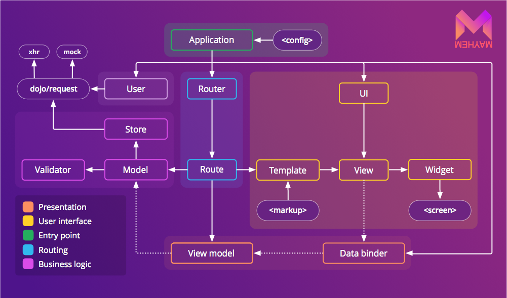

Mayhem is a framework for developing large, complex applications with TypeScript or JavaScript. Unlike other Web libraries and frameworks that place absolute emphasis on performance or file size, Mayhem is designed around these three key tenets:
Predictability: As much as possible, the framework must be designed to minimise surprise. Mayhem uses as little magic as possible in order to accomplish its goals, while still being exceptionally powerful & easy to use, with a minimum of rote.
Extensibility: It must be possible for all parts of the framework to be easily extended or replaced with newer, better components. This allows many different classes of applications to be written, including those not envisioned when the framework was originally written, using the same standard set of tools.
Correctness: When writing software, it’s frustrating when your tools get you stuck. Mayhem was architected from the ground up to be modular, testable, and easy to understand in order to minimise the maintenance cost surrounding its use.
We believe that good architecture, in combination with today’s superfast JavaScript engines, ensures a very high level of performance in nearly all use cases. As such, the clarity and maintainability of the Mayhem codebase will always be given priority over performance tweaks in all but the hottest code paths. We hope that you will see the benefit of this decision in increased productivity and less time spent troubleshooting your apps!
What is Mayhem best for?
Mayhem is a general purpose application development framework that can be used for developing virtually any type of client-side, server-side, or mobile application. Because of its emphasis on strict architectural patterns and conventions, it is especially well-suited for extremely large, “enterprise-level” applications that must be maintained by large teams of developers with varying skill levels.
This first release of Mayhem focuses primarily on the development of form-based client-side Web applications, but we plan on rapidly expanding functionality for other types of apps. Pull requests are accepted!
System requirements
End-users of Mayhem applications must meet the following minimum system requirements:
Android
4.1.2+
Chrome
Latest
Firefox
Latest ESR or rapid release
Internet Explorer
8+
iOS
6.1+
Opera
Latest
Safari (Mac OS)
Latest
Developers using Mayhem must also meet the following additional requirements:
Depending upon the platform you are planning on developing for, there are three different ways in which installation can be performed:
For writing Node.js apps: Mayhem can be installed for use with Node.js by running npm install mayhem. This will install a copy of Mayhem that has been pre-compiled for Node.js using the CommonJS module format, plus ambient declarations that can be used when writing Mayhem applications for Node.js with TypeScript.
For writing browser & mobile apps: Mayhem can be installed for browsers & mobile devices by running bower install mayhem. This will install a copy of Mayhem that has been pre-compiled for asynchronously loaded environments using the AMD module format, plus ambient declarations that can be used when writing Mayhem applications for browsers or mobile devices with TypeScript. Bower can be installed from npm by running npm install -g bower.
For working on Mayhem, or compiling your own modules: The original TypeScript source for Mayhem can be installed from our GitHub repository by running git clone --recursive git@github.com:SitePen/mayhem.git. The README file in the repository contains additional instructions on installation and usage of the development version of Mayhem.
Because Mayhem is written in TypeScript, future versions of Mayhem will also be compiled to standard EcmaScript 6 modules once that format has been finalised.
Reading this guide
Throughout this guide, you will find certain pieces of information are called out specifically, as we have found them to be especially important or problematic for users.
Later sections of this guide are designed to be built upon knowledge presented in earlier parts. If you jump into the middle and feel confused, step back a section or two until you find the information you need to move forward. We also accept pull requests to the documentation in order to improve its flow and clarity.
Creating your first app
In order to simplify the creation of new applications, Mayhem comes with a command-line generator that can be used to instantly generate new applications.
To get started, just run the generator for starting a Web application:
$ yo mayhem webapp src
This will create a new skeleton Web app in the src directory (actually, a TodoMVC app). All that needs to be done now is to open the test application in a browser:
http://localhost/path/to/src/index.html
Navigating to this index page should display a fully functioning client-side TodoMVC application, ready for you to start hacking away!
TODO: Continue tutorialising the basic TodoMVC app; maybe add in user authentication or something.
Fundamentals
TODO: Describe core technologies like AMD, Promises, …
Overview

The subsystems of Mayhem
The architecture of Mayhem is divided up into eight primary subsystems:
Application: The application subsystem is responsible for providing a mechanism for creating new applications by configuration, dynamically loading application components at runtime using dependency injection, and providing a main application-wide object for each application that is currently running in the environment.
Data binding: The data binding subsystem is responsible for all functionality related to binding properties between two objects, and observing properties on objects for changes. This subsystem is essential for implementing the MVVM pattern, which will be discussed shortly.
Data modelling: The data modelling subsystem provides functionality related to business logic, data object creation, data validation, and communication with databases.
Foundation: The foundation subsystem provides core functionality for the entire Mayhem application framework, like observable proxy objects, utility functions, and other miscellaneous critical functionality.
Routing: The routing subsystem is responsible for discovering, loading, and linking together data models and sub-views in response to navigation within an application.
Security: The security subsystem is responsible for providing user authentication & authorization, access control, and other security-oriented application functionality.
Templating: The templating subsystem is responsible for creating views and linking data models to the views using easy-to-write declarative templates.
Views: The view subsystem is responsible for handling all UI input and output, and providing an abstraction layer over the platform’s own UI system.
The TypeScript language
Mayhem is written in TypeScript in order to take advantage of the significant maintenance benefits that come with optional strict typing and the ability to define strong interfaces. Since these features are also critical to keeping large applications maintainable over many years—especially with teams of varying disciplines and skill levels—we strongly encourage all users of Mayhem to explore using TypeScript directly when writing apps with Mayhem. However, the TypeScript compiler does generate highly-readable, well-formed JavaScript, so if you prefer to use vanilla JavaScript, go right ahead!
The MVVM pattern
An overview of the MVVM pattern
Mayhem implements the model–view–view-model (MVVM) architectural pattern, which separates business logic, user interface logic, and the user interface itself into three distinct layers. This pattern is similar to the Smalltalk MVC pattern (not to be confused with Model 2 MVC, a pattern used by server-side MVC frameworks), but it uses an improved mode of interaction between the different layers in order to avoid the “fat controller” anti-pattern common to many MVC apps.
Model
The term model in the context of the MVVM pattern refers to a “business” object—an object that contains code and data that performs the actual work of the business. Models operate completely independently from any user interface, so can be fully reused across many different systems. For example, if you were writing software for managing a bank, bank accounts and transactions would be two different types of models. Models within Mayhem are normally created by subclassing the mayhem/data/Model class, which provides standard functionality for defining, loading, validating, and saving data.
View
The term view in the context of the MVVM pattern refers to an object representing part of the interactive user interface of an application. Views encapsulate both input and output: they display data to the user in the form of widgets and sub-views, and collect and dispatch user input (mouse, touch, pen, keyboard, Kinect, etc.) from the user interface back to the rest of the system, usually by calling a method on a view-model.
View-model
The term view-model refers to a Model object that exposes properties that are required by a specific view. For example, if you had a transaction history view in your application, you would create an associated view-model that exposed a Collection of Transaction objects to display in the list, plus additional properties that could be updated by the view in order to dynamically change the contents of the Transactions collection.
One of the key differences between an MVVM view-model and an MVC controller is that the view-model is never given a reference to its associated view. Instead, properties are [TODO: should talk about data binding before getting here?] data-bound between the view and the view-model, so that when something in the view changes, a bound property of the view-model is updated, and vice-versa. This approach allows view-models to be decoupled from and reused by multiple different views, and also allows their logic to be tested completely independently from any user interface. It also has the added benefit of preventing any UI-specific code from ending up outside of the view subsystem.
In many cases, view-models are simple proxies back to real data models. For example, while a Transaction model may store the amount of a transaction in USD cents, your view may want to display the transaction amount in its equivalent in euros, with the correct currency symbol and locale-specific number formatting. Since all other information—like the transaction ID and recipient—can be taken as-is from the original data model, there is no reason to create an entirely separate view-model that re-exposes these properties just to add this one extra piece for the view. mayhem/data/ProxyModels allow you to wrap an existing model object with extra properties for display in a view, with all other properties delegating back to the original data model.
Conventions
Mayhem uses conventions that enable features similar to those only available in EcmaScript 6+ to be used in environments going back to EcmaScript 3. Because these conventions are used throughout code written with Mayhem, it is important to understand these conventions and why they exist. Over time, as the TypeScript compiler improves and support for older platforms is dropped, code written with Mayhem will become much more concise and easier to author.
Object construction
All constructors in Mayhem share the same constructor signature, with a single optional keyword arguments object accepted as the sole argument:
{ new (kwArgs?:Object):<ClassType>; }
By passing all arguments to a constructor using a keyword arguments object instead of allowing arbitrary constructor parameters, many things become easier:
Constructors can always be extended in a backwards-compatible manner, since new properties can simply be added to the list of accepted properties without a signature change
No extra code is necessary for parameters that need to go through accessors/mutators, as the keyword arguments object is mass-assigned at construction time
Default object properties
Due to design limitations in TypeScript 1, default property values should be defined by adding an _initialize function to subclasses instead of using the syntactic sugar for default properties built into TypeScript’s class syntax:
It is expected that future revisions to TypeScript will re-enable the use of the default property value syntax without breaking the ability to use keyword arguments.
Object usage
Getting and setting properties on most Mayhem objects is done using object.get(key) and object.set(key, value) methods instead of using the normal property accessor (.) operator. This is necessary to support observable accessor/mutator functions in pre-ES5 environments, and to support Proxy-like behaviour in pre-ES6 environments. The Base object describes how to create and use objects in Mayhem.
Object destruction
When you are done working with a class instance in Mayhem, it should always be destroyed by calling object.destroy. Doing this ensures that any internally held references to other objects that may still be retained elsewhere are broken, and that any necessary clean-up work is completed.
Event registration
Mayhem continues the best practice established in the Dojo Toolkit of returning an IHandle object from methods that perform registrations (event listeners, method aspects, data bindings, registry entries, etc.) instead of providing symmetric add/remove APIs. This practice offers many significant benefits over symmetric APIs:
You only need to keep a reference to the IHandle object, instead of needing to keep references to all arguments passed to the event registration function, or using hacks like namespaced events
Anonymous functions can be used when registering event listeners that need to be removed later
You only need to remember one way to remove any type of object registration (handle.remove())
Convenience APIs for mass-removal of registrations can be created without needing to know every possible type of registration
Handles can be extended with additional context-specific APIs for modifying registrations (for example, to change the source or target of a data binding)
Module paths
Mayhem recommends the use of a standard set of paths for holding different object types:
app/models: This path holds all application data models.
app/routes: This path holds all application routes.
app/viewModels: This path holds all application view models.
app/views: This path holds all application views and templates.
Code conventions
Mayhem follows most normal TypeScript code conventions, with the exception that spaces are not normally placed before type definitions in order to provide better disambiguation at a glance between a type value (no space) and an object literal value (space). A tslint profile for Mayhem, along with an up-to-date description of all code conventions, is available in the TODO README within the Mayhem repository.
The Base object
Within Mayhem, most objects are extended from the Observable (TODO: rename to Base) object. The Observable object provides a consistent API for getting and setting properties that allows computed properties to be created in EcmaScript 3 environments and that allows proxy-like interactions to be created in EcmaScript 5 environments.
ES3-compatible computed properties can be created on Observable objects by writing protected functions with the names _propertyNameGetter and _propertyNameSetter. You can also declare dependencies for a computed property by adding a _propertyNameDependencies function:
Note that the formattedPrice setter in both of these examples has to perform its own notification that the value has changed. This allows computed property setters to control if and when change notifications occur, and matches the behaviour of the EcmaScript 7 Object.observe API.
When extending an Observable object, extra interfaces must be created in order to provide accurate typing information for get and set calls:
It is expected that future revisions to TypeScript will enable automatic generation of these interfaces.
Setters vs observers
When creating components that extend from Observable, it’s important to distinguish between the functionality of a property setter function and the functionality of an property observer function:
A setter function should be used when the way in which a property is set needs to be changed. For example, if you had a computed formattedPrice property that computed a human-readable price (as in the previous example), you could also have a setter function to convert a formatted price value back into a number and then set it on price.
An observer function should be used when an object needs to respond to the fact that a particular property has changed. For example, if you had a computed totalPrice property that was based on the subtotals of items in a shopping cart, the property would never be set directly but it would update frequently as items were added and removed from the cart.
While property setters are defined declaratively as methods of an Observable subclass, property observers are normally added to objects using the application’s data binder. TODO: Are we keeping Observable#observe? Should we add a declarative mechanism for observing property changes on oneself?
The Application subsystem
Creating an application
Mayhem provides a base mayhem/Application class for creating new applications:
New applications are created simply by instantiating a new Application object:
import Application = require('mayhem/Application');
var app = new Application();
A Mayhem application can be very easily customised just by passing a configuration object to the constructor:
import Application = require('mayhem/Application');
var app = new Application({
name: 'Bob’s Burgers'
});
log(app.get('name'));
'Bob’s Burgers'
It is also possible to create custom applications by subclassing an existing Application class. For example, the mayhem/WebApplication class is a subclass of mayhem/Application with a different default configuration suitable for writing Web applications.
Once the application object is ready for use, call app.run() to start it:
import Application = require('mayhem/Application');
var app = new Application({
name: 'Bob’s Burgers'
});
log(app.run().then(function () {
// started successfully
}, function (error:Error) {
// an error occurred during start-up
}));
<Promise>
Application components
The Application class on its own does relatively little; its power comes in the ability to dynamically load and instantiate different application components that implement the individual functions necessary to create a complete application. For example, the mayhem/binding/Binder class is an application component that is used to perform all data binding within an application, and the mayhem/ui/Master class is an application component that is used to provide a user interface.
The default Mayhem application components can be overridden with custom implementations. However, keep in mind that some parts of the framework that require features from application components expect them to exist at specific keys on the Application instance:
binder: An implementation of the mayhem/binding/interfaces.IBinder interface. Provides data binding.
errorHandler: An implementation of the mayhem/interfaces.IErrorHandler interface. Provides error handling for an application.
i18n: An implementation of the mayhem/I18n interface. Provides internationalisation and localisation for an application.
router: An implementation of the mayhem/routing/interfaces.IRouter interface. Provides navigation & application state management.
scheduler: An implementation of the mayhem/interfaces.IScheduler interface. Provides event scheduling.
ui: An implementation of the mayhem/ui/Master interface. Provides user interface support.
user: An implementation of the mayhem/auth/User object. Provides user authentication and authorization for single-user applications.
Application components can be dynamically added to an application at runtime using the components property of the configuration object. The configuration object gets deep copied onto the default configuration, so default application components will continue to exist even if they are not set in the configuration object:
Deep copying also means that the properties of default application components can be tweaked without having to rewrite the entire component declaration:
Using a string value for a constructor property causes the Application instance to dynamically load a module matching the given string once it is started. The value of the module will be used as the constructor function to create a component.
Application component constructors can also be explicitly imported and provided directly, which helps to automate build-time dependency resolution:
Once the application has been started, it will perform these actions:
Freeze the components property so it can no longer be modified
Load modules for any unloaded application components whose constructor properties were strings
Instantiate all the application components, assigning them each to the corresponding key directly on the Application instance
Call the run method on all application components that need to perform additional start-up actions
Wait for all application components to finish starting
Resolve the returned run promise
Application components are instantiated using the value of the constructor property from the configuration object as the constructor function. The rest of the properties on the configuration object, plus an extra app property pointing to the Application instance, are passed as keyword arguments to the constructor:
import Application = require('mayhem/Application');
import Observable = require('mayhem/Observable');
import Promise = require('mayhem/Promise');
class BurgerComponent extends Observable {
constructor(kwArgs?:Object) {
super(kwArgs);
log(kwArgs);
}
run():Promise<void> {
// a component can do its own start-up work here,
// and optionally return a Promise for asynchronous
// work
return new Promise(function (resolve:Promise.IResolver<void>) {
setTimeout(resolve, 1000);
});
}
}
var app = new Application({
components: {
burgers: {
constructor: BurgerComponent,
buns: [ 'regular', 'sesame' ],
meats: [ 'beef', 'turkey', 'veggie' ],
toppings: [ 'cheese', 'onion', 'tomato' ]
}
}
});
app.run().then(function () {
log(app.get('burgers'));
});
Data binding is a mechanism by which the value of a property on one object is kept in sync with the value of a property of another object. In other words, data binding makes it possible to have a statement a.foo = 'bar' also automatically execute the statement b.foo = 'bar', ensuring that the properties a.foo and b.foo will always eventually contain the same value.
One of the most common ways that data binding is used is to keep a user interface in sync with data from a business object. For example, given an application that displays a menu of burgers, when the name or price of one of the items on the menu changes, data binding ensures that the change is automatically reflected by the UI without requiring the programmer to notify the UI to update or re-render.
Data binding is directional: it is possible to have a one-way binding where only a change to the source property causes the target object to update, or a two-way binding where source and target properties are kept in sync regardless of which is changed. Most data bindings are intended to keep objects in sync with each other, so the default directionality in Mayhem is two-way.
How to bind data in Mayhem
In Mayhem applications, all data binding is performed by the central data binder application component. By convention, this component is always created at Application#binder. Using the data binder, it is possible to create simple bindings between two properties just by calling Binder#bind:
import BindDirection = require('mayhem/binding/BindDirection');
var binder = this.get('app').get('binder');
var a = { foo: 'bar' };
var b = { foo: null };
// `b.foo` becomes 'bar'
var handle = binder.bind({
source: a,
sourcePath: 'foo',
target: b,
targetPath: 'foo',
direction: BindDirection.ONE_WAY
});
// `b.foo` becomes 'blah'
a.foo = 'blah';
// Removes the binding
handle.remove();
With the default set of Binding constructors, the data binding system allows you to bind to arbitrarily nested properties, including those that do not exist yet, using normal dotted object syntax:
var binder = this.get('app').get('binder');
var a = { foo: null };
var b = { foo: null };
binder.bind({
source: a,
sourcePath: 'foo.bar.baz',
target: b,
targetPath: 'foo'
});
// `b.foo` becomes 'blah'
a.foo = { bar: { baz: 'blah' } };
// `b.foo` becomes undefined
a.foo = { bar: null };
If you need to access a property whose name contains a dot, simply escape the dot with a backslash:
var binder = this.get('app').get('binder');
var a = { 'foo.bar': 'blah' };
var b = {};
// `b.foo` becomes 'blah'
binder.bind({
source: a,
sourcePath: 'foo\\.bar',
target: b,
targetPath: 'foo'
});
It is also possible to more directly observe and modify a property by creating a low-level Binding object with Binder#createBinding. Binding objects are abstractions that allow us to ignore how and where a property is bound and instead focus solely on the value of the bound property:
var binder = this.get('app').get('binder');
var a = { foo: 'bar' };
var binding = binder.createBinding<string>(a, 'foo');
binding.observe(function (change:interfaces.binding.IChangeRecord<string>) {
// When the observed property changes, this function is called
change.oldValue; // 'bar'
change.value; // 'blah'
});
binding.get(); // 'bar'
// Causes observe callback to be called
a.foo = 'blah';
Binding to arrays and collections
Mayhem’s data binding system comes with additional bindings specifically for monitoring when an array or collection is changed:
This binding is used whenever the object being bound is an array and the path matches the string '*'. This binding can be used as part of a longer path as well, just like all the bindings constructors in Mayhem:
As with all application components, the default data binder included with Mayhem, mayhem/binding/Binder, can be replaced by a totally different data binder, if desired:
However, this is usually not necessary, since even if you need to bind to something that the default binder doesn’t understand, it is designed to be extensible through the addition of custom Binding object constructors:
import Application = require('mayhem/Application');
var app = new Application({
name: 'Bob’s Burgers',
components: {
binder: {
// Adding a new BurgerBinding type
constructors: [ 'app/binding/BurgerBinding' ]
}
}
});
Binding constructors can also be added and removed dynamically while the application is running by calling mayhem/binding/Binder#add:
var binder = this.get('app').get('binder');
// Adds a new CustomBinding constructor as the top priority constructor
var handle = binder.add(CustomBinding, 0);
// Stops the CustomBinding constructor from being used by the binder
handle.remove();
Routing
What is routing?
In many application frameworks, including Mayhem, routing is the primary mechanism by which an application manages its state. Usually, this state management is based on an addressable state mechanism (like a URL). (This is also sometimes called the front controller pattern.)
Routing in Mayhem is performed by the router application component. This component is responsible for a few things:
Reacting to changes to the address of the application (for example, from a browser’s address bar);
Loading and unloading the appropriate routes for the new state; and
Passing arguments parsed from the new address to the active route.
The built-in Mayhem application routers break routing cycles down into three phases:
Incoming requests are normalised into mayhem/routing/Request objects. This allows the framework to handle requests identically whether they come from HTML5 history, a hashchange event, a Node.js HTTP server, or any other address source that can be converted to a Request object.
The Request object is passed through a list of URL rules. URL rules provide the relationship between a URL and a route. In the case of an incoming request, a URL rule returns a route identifier and a map of arguments to be passed to the route object. The first URL rule that matches an incoming request wins.
A route matching the route ID from the URL rule is looked up a route map. If the route exists, it is loaded, and the route arguments are passed to the route. The route then performs actions in response to the routing change (loads models, loads views, etc.).
The default routing architecture
Defining routes
A routing configuration for a very basic Web application with a single route might look like this:
When the menu route is activated—which happens when a user visits a specific URL, described below—the router will use the app/routes/Menu module as the constructor for the route.
Routes are each given a unique string identifier so that the router can be asked to generate a URL to a specific route:
As demonstrated in the previous example, with no URL rules at all and using the default mayhem/routing/HashRouter, this route would be accessible by navigating to http://localhost/path/to/app/#!?routeId=menu.
By adding a URL rule, the URL used for a given route can be made friendlier:
With this change, the menu route can now be accessed by navigating instead to http://localhost/path/to/app/#!/menu.
Separating URL rules from the routes themselves makes it possible to also create URL rules that map to routes generically, using parameterised regular expression strings:
This generic rule will work the same as the explicitly defined menu rule, but requires no new URL rules when adding additional routes to an application.
It is also possible to define a default route state that will be used if a visitor navigates directly to the index page of an application:
When a route is activated after previously being inactive, its beforeEnter and enter methods are called:
TODO
Similarly, when a route is deactivated after previously being active, its beforeExit and exit methods are called:
TODO
The overall order of execution is beforeExit, beforeEnter, exit, enter. This pattern allows the exiting route an opportunity to pause or cancel the route change (for example, if the user needs to save changes) as well as allows the entering route to to pause or cancel the change (for example, if the user has no permission to access to the new route).
All the routing lifecycle methods have the ability to pause routing to perform asynchronous operations by returning a Promise:
TODO
Rejecting a returned promise, or throwing an error, will cause the application’s errorHandler to be invoked unless the thrown error is a dojo/promise/CancelError, in which case the routing action will simply be cancelled. Attempting to navigate to another route while an existing route transition is underway will cause the existing transition to be cancelled.
If a route is already active and the router detects a state change that will not deactivate the active route, the update method will be called on the active route to notify it of the changed route parameters.
Views
How views work
The view subsystem in Mayhem is different from most other Web application frameworks (Ember, Polymer, Angular, React, etc.) because it fully abstracts the platform UI (i.e. the DOM). This means that unless you are creating a custom platform widget, you never touch the DOM directly. This approach requires thinking slightly differently about how user interfaces are created, but it allows you to do several exceptional things:
Your application can use native UI controls (i.e. real iOS and Android widgets) with few or no changes
Your application can run from a Web Worker process, ensuring the UI thread is never blocked
You don’t need to understand complex tree diffing mechanisms like Virtual DOM, since monolithic render methods that rebuild the entire view when something changes aren’t used
You don’t have to worry about platform bugs or missing features (like Pointer Events), since they can be handled by Mayhem’s UI abstraction layer
Views in Mayhem are composed of multiple widgets and other views. Widgets are views that represent reusable UI components—text labels, input controls, lists, grids, and so on. Widgets and views can be created using one of three approaches:
Declarative approach: using view templating to generate a view from markup
Programmatic approach: using inheritance to extend the base Widget class
Hybrid approach: extending a View generated declaratively and adding extra features programmatically
The most common approach for simple applications is to create views declaratively. These are called templated views:
<h1>{app.name}</h1>
<p>What kind of burger do you want?</p>
TODO: This does not work with dstore collections
<if condition={app.burgers.length}>
<ul>
<for each={app.burgers} as="burger">
<li>
{burger.name} - {burger.formattedPrice}
</li>
</for>
</ul>
<else>
Sorry, we have no burgers
</if>
The HTML templating engine is implemented as an AMD loader plugin, so loading a templated view is straightforward in most cases:
The view templating section describes the templating language in greater detail.
View templating
The default templating system in Mayhem is an extension of HTML that overlays data binding, conditionals, loops, custom elements, and other basic features onto the language. Data binding paths are placed inside curly brackets ({path} for one-way binding and {{path}} for two-way binding) and bind to the model object (TODO: Should it be the code-behind view object instead? otherwise we’re restricted.) associated with the view:
{name}
view.set('model', { name: 'foo' });
Outputs:
foo
Using a widget in a view is as simple as using the <widget> tag:
<widget is="mayhem/ui/Label" text={foo}></widget>
The value of the is attribute must be a module ID that resolves to a view constructor.
Mayhem’s HTML templating engine also allows widgets to be registered as custom elements within individual templates, which is useful when the same widget is used multiple times within a template:
This example is equivalent to the previous example, except the <label> tag has been aliased to the mayhem/ui/Label widget.
Because aliases are defined only for the specific template in which they appear, there is no chance of aliases conflicting with aliases from other templates. This is different from Web components, which require custom elements to be registered on the parent document and can cause conflicts when multiple applications run on the same page.
Mayhem’s HTML templating includes some extra, special tags for conditionals, loops, and Promise handling:
<if>, <elseif>, and <else>: Allows content to be conditionally displayed. Internally, creates an instance of the mayhem/templating/html/ui/Conditional widget.
<when>, <pending>, and <rejected>: Allows different content to be displayed while a Promise is being resolved. Internally, creates an instance of the mayhem/templating/html/ui/Promise widget.
<for>: Allows simple iteration over an array or Collection. Internally, creates an instance of the mayhem/templating/html/ui/Iterator widget.
Conditional display
TODO: It would be nice to eliminate the “condition=” part
<if condition={foo}>
Has a foo
<elseif condition={bar}>
Has a bar
<else>
No foo, no bar
</if>
Promise handling
<when value={foo} as="fooValue">
foo is resolved to {fooValue}
<pending>
Please wait for foo
<rejected as="fooError">
foo was rejected because {fooError.message}
</when>
Iterator
<for each={foo} as="item">
{item.name}
</for>
Using cross-platform views
Mayhem’s view system is designed so that the underlying rendering platform (DOM, iOS, Android, Node.js streams, etc.) is never exposed to an application under normal use. This means that Mayhem applications can be written to run seamlessly across multiple platforms, using native UI controls, without having to rewrite the application in a different language, and without having to emulate the UI features of the target platform.
In order to create a cross-platform application, it’s necessary to use the standard set of widgets.
The event system
In addition to displaying information to a user interface, the view system is also responsible for receiving input from a user interface that can be used to execute functions within an application in response to interaction. To do this, Mayhem provides an event abstraction system that normalises input from different view implementations into a standard event model.
The standard event model in Mayhem translates all pointer inputs (mouse, pen, touch, etc.) into standard PointerEvent objects that closely match the W3C Pointer Events API, and keyboard events into standard KeyboardEvent objects that closely match the latest DOM 3 Events API:
TODO: example
It is possible to easily create custom events, such as gestures, using extension events that listen for lower-level events and then dispatch the custom events when the custom event’s criteria are satisfied:
TODO: example
Custom platform widgets
When creating custom platform widgets, the _render method can be used to generate native UI controls knowing that all initial properties from the kwArgs object have been set. This method will only ever be invoked once. There is no guarantee about exactly when this method will be invoked, except that it will always be after all kwArgs properties have been set but before the widget is attached to the view tree.
Custom widgets should do their best to only update while their isAttached property is true. When isAttached is false, the widget is not attached to the view tree, and UI updates performed in this condition will never be seen by a user. Widgets should not use the detach method as an indicator to halt operations since this method is used a widget is simply moved from one part of the UI to another.
TODO: There should probably be rendering lifecycle methods to avoid isAttached churn? Data binding loop, view read loop, view write loop.
Collections
Collections basics
TODO: Figure of data layer, model | collection | store | HTTP | server.
Like arrays, collections hold sets of data, but do so with an API that’s suitable for working with data that comes from asynchronous data sources, like remote servers or databases. Mayhem uses dstore to provide a robust collections API for use with Mayhem applications.
Collections in Mayhem are generated by first creating a dstore.Store data store, then executing filter and sort calls in order to create a collection representing a subset of the data in the store:
import RestStore = require('app/stores/RestStore');
import Burger = require('app/models/Burger');
var burgers = new RestStore({ target: '/rest/burgers/' });
burgers.filter({ hasCheese: true }).sort('name').fetch().then(function (cheeseburgers:Burger[]) {
// just the cheeseburgers, sorted ascending by name
});
Data stores can also be used directly as collections in order to retrieve all data from the store:
import RestStore = require('app/stores/RestStore');
import Burger = require('app/models/Burger');
var burgers = new RestStore({ Model: Burger, target: '/rest/burgers/' });
burgers.fetch().then(function (allBurgers:Burger[]) {
// all the burgers
});
Collections in Mayhem support fetch ranges, so you can request records in pages instead of needing to inefficiently retrieve all data at once:
import RestStore = require('app/stores/RestStore');
import Burger = require('app/models/Burger');
var burgers = new RestStore({ Model: Burger, target: '/rest/burgers/' });
burgers.fetchRange({ start: 0, end: 10 }).then(function (firstTenBurgers:Burger[]) {
// the first ten burgers
});
Different stores may use different fetchRange arguments; for example, stores based on technologies like DynamoDB, which don’t support integral paging, may require an exclusive start key to be passed instead.
Collections also provide a forEach convenience method for asynchronously iterating over the items in a collection without requiring extra fetch boilerplate:
import RestStore = require('app/stores/RestStore');
import Burger = require('app/models/Burger');
var burgers = new RestStore({ Model: Burger, target: '/rest/burgers/' });
burgers.forEach(function (burger:Burger[]) {
// called once for each burger in the store, as they become available
});
Users familiar with SQL databases can map most of the functionality of a Mayhem/dstore Collection directly back to concepts in SQL:
A model is an object that provides business logic and data for an application (as opposed to a view–model which provides view-specific logic and data). For developers that have worked with databases but are unfamiliar with models, a model can be thought of as an object representing one record in a database table, where the properties of the model correspond to columns in the database.For example, we might create a Burger model corresponding to a type of burger on our menu:
In Mayhem, models are normally created as subclasses of mayhem/data/Model. Models that are designed to be saved and retrieved from a data store are subclasses of mayhem/data/PersistentModel.
Tracking model changes
Mayhem’s Models track the “dirtiness” of model properties, so you can determine whether or not the properties of a model have been changed and revert those changes before they are permanently committed:
Once a model is populated with data from a user, it’s usually necessary to validate that the data is actually valid. Validation rules for Mayhem models are declared by providing a validators key on the model that returns a map of property keys to validators:
import RequiredValidator = require('mayhem/validation/RequiredValidator');
import StringValidator = require('mayhem/validation/StringValidator');
import NumberValidator = require('mayhem/validation/NumberValidator');
class Burger {
// …
_validatorsGetter() {
return {
name: [
new RequiredValidator(),
new StringValidator({ maxLength: 40 })
],
price: [
new RequiredValidator(),
new NumberValidator({ min: 500 })
]
};
}
}
export = Burger;
Validation rules can be restricted to specific scenarios by specifying which scenarios are valid for a particular validator:
import Model = require('mayhem/data/PersistentModel');
import RequiredValidator = require('mayhem/validation/RequiredValidator');
class BurgerUser extends PersistentModel {
// …
_validatorsGetter() {
return {
email: [
new RequiredValidator()
],
confirmEmail: [
// TODO: Rename 'scenarios' to 'on' in code
new RequiredValidator({ on: [ 'insert' ] })
]
};
}
}
export = BurgerUser;
In this case, the confirmEmail property only needs to be filled out when the scenario property of the model is set to 'insert'. If the scenario is changed to something else (like 'update'), the validator will no longer be applied.
TODO: Describe custom validators and asynchronous validators
Persisting data
In order to persist data models across page loads, a data model should extend from the mayhem/data/PersistentModel class. The PersistentModel class TODO
Internationalisation
The I18n object
The I18n application component provides all the necessary functionality for internationalising Mayhem applications.
By default, the locale used by the I18n component is taken from the current environment, using navigator.language in browsers and process.env.LANG in Node.js. The locale can be overridden at startup by setting the locale property, or at runtime by calling I18n#switchToLocale:
Mayhem uses the standard Unicode MessageFormat format to provide accurate translation of plurals, gender, and other features that vary across locales:
{GENDER, select,
male {He}
female {She}
other {They}
} found {NUM_RESULTS, plural,
one {1 result}
other {# results}
} in {NUM_CATEGORIES, plural,
one {1 category}
other {# categories}
}.
Translation dictionaries are created by writing NLS bundles. NLS bundles are simply modules placed inside an nls directory, separated by locale:
The root NLS bundle (app/nls/myBundle in this example) defines the list of available translation locales for that bundle. It also provides a set of default backup translations for locales without translations. The list of supported locales are simply boolean values on the exported object, whereas the default translations are provided on the root property:
// in app/nls/myBundle.ts
// Available locales, `en` and `es`
export var en = true;
export var es = true;
// Default translations for locales other than `en` and `es`
export var root = {
greeting: 'Hello, {NAME}!',
orderBurgers: `Order {NUM_BURGERS, plural,
zero {zero burgers},
one {one burger},
other {# burgers}
}`
};
Locale-specific bundles simply export each message directly:
// in app/nls/es/myBundle.ts
export var greeting = 'Hola, {NAME}!';
export var orderBurders = `Pedir {NUM_BURGERS, plural,
zero {cero hamburguesas},
one {una hamburguesa},
other {# hamburguesas}
}`;
To load an NLS bundle into I18n at runtime, call I18n#loadBundle, passing the root bundle’s module ID. It is also possible to preload message bundles at startup by setting the preload property to an array of module IDs:
When a bundle is loaded, its values will be compiled into functions (if they are not already functions) and added to the existing set of messages. To use a message, call the formatter from the messages key, passing any arguments necessary for the translation to be completed successfully:
Dates, currency, and numbers will be formatted/parsed according to the currently defined locale, using data from the Unicode Common Locale Data Repository.
Security
The User object
The main application component responsible for handling authentication and authorization within a Mayhem application is the User object. This object represents the identity of the current user and encompasses all functionality related to user access control. Using the User object, you can:
Log a user in and out (User#login and User#logout)
Check whether a user is logged in (User#isAuthenticated)
Check whether a user has access to perform an operation (User#checkAccess)
Get and set other arbitrary data about the current user (name, email address, etc.)
When creating an application with access control, the User object needs to be subclassed to add the correct authentication method for your application:
import request = require('dojo/request');
import User = require('mayhem/auth/User');
import WebApplication = require('mayhem/WebApplication');
class BurgerUser extends User {
protected _authenticate(kwArgs:{ username:string; password:string; }):Promise<{}> {
return request('/authenticate/', {
data: JSON.stringify(kwArgs)
}).then(function (result) {
// If authentication fails, the promise should be
// rejected with an error describing the reason for
// failure
if (result.error) {
throw new Error(result.error);
}
// If authentication succeeds, the object resolved
// by the promise will be available to the rest
// of the application at `user.state`. This can
// contain any arbitrary information, like a friendly
// name for the user to display in the UI, lists of
// valid roles that can be used by `checkAccess`, or
// anything else your application needs.
return result.state;
});
}
}
var app = new Application({
user: new BurgerUser()
});
app.run();
Role-based access control (RBAC)
Mayhem uses role-based access control to authorize users to perform certain actions within an application. RBAC works by describing a set of permissions that the application checks when performing certain actions, then granting those permissions to different roles that can be assigned to users.
In Mayhem, a permission is simply a unique string, like 'view' or 'update', that describes the permission to be granted. Permissions are granted to roles by calling Role#can, passing optional business logic that can provide additional runtime restrictions on whether or not the permission is granted:
// TODO: Preliminary APIs, subject to change, no implementation
// Provide the list of actions, and definitions for each action
// that can be displayed in an administrative control panel
authManager.addPermission('viewBurger');
authManager.addPermission('createBurger');
authManager.addPermission('updateBurger');
authManager.addPermission('deleteBurger');
// Guests can only view things
var guest = new Role('guest');
guest.can('viewBurger');
var normal = new Role('normal');
// Normal users can do what guests do…
normal.inheritFrom(guest);
// …plus create new burgers…
normal.can('createBurger');
// …plus update or delete burgers, but only burgers that they created
normal.can([ 'updateBurger', 'deleteBurger' ], function (burger:{ creatorId:string; }) {
return burger.creatorId === this.get('app').get('user').get('id');
});
// Administrators can do everything to everything
var admin = new Role('admin');
admin.can('viewBurger', 'createBurger', 'updateBurger', 'deleteBurger');
// Once all the roles are created they need to be added to the list of available roles
authManager.addRoles([ guest, user, admin ]);
Once the role hierarchy is established, roles can be assigned and unassigned from users by calling User#addRole and User#removeRole:
// Downgrade a user from admin to normal user
user.removeRole('admin');
user.addRole('normal');
TODO: User object may not be the best place to hold all of the authorisation stuff, we might want to create a second component to do some of this, since there needs to be a way to bulk change & persist to a remote server/database, like an auth manager as noted above. In such a case adding/removing roles would be done within the auth manager instead of on the user object itself.
It is possible to assign a user multiple roles if this makes sense for your role system.
Finally, in application code, call User#checkAccess to determine whether or not the user has been granted permission to a particular activity:
// TODO: Improve this example to give surrounding Route code
return this.get('app').get('user').checkAccess('updateBurger', burger)
.then(function (isAllowed:boolean) {
if (!isAllowed) {
throw new Error('Permission denied');
}
});
Testing
Testing Mayhem apps
Mayhem uses the Intern testing framework to test its own code and comes bundled with TypeScript definition files so applications can easily write tests in TypeScript as well. Generating an application using the Mayhem generator will provide you with a pre-created set of tests, test configuration, and Grunt task to match the example application.
One of the primary reasons that Application objects are passed to all instances throughout a Mayhem application is to enable simple dependency injection when testing classes in isolation. Passing the application object in this manner allows tests to easily provide mock application objects to each component.
TODO: Add more info here.
Optimising
Creating builds
Mayhem is built on top of the Dojo Toolkit and so comes bundled with a complete code optimiser that enables highly optimised builds to be created with minimal effort. Generating an application using the Mayhem generator will provide you with a pre-created build profile and Grunt build task to match the example application.
To significantly reduce the number of dependencies that you need to explicitly put in your build profile, prefer to load your dependencies using explicit import calls instead of using string constructors for dependency injection:
import Application = require('mayhem/Application');
var app = new Application({
components: {
foo: {
// don't do this
constructor: 'app/Foo'
}
}
});
import Application = require('mayhem/Application');
import Foo = require('./Foo');
var app = new Application({
components: {
foo: {
// do this instead
constructor: Foo
}
}
});
Community
Getting help
The Mayhem team wants to help people like you write applications more quickly and easily than ever before. As such, we offer two different ways you can get help with Mayhem:
Community support
The Mayhem community is available to assist you with basic questions, advice, and general guidance. There are two primary ways to get community support:
Post on Stack Overflow using the tag [mayhem]. Please make sure to follow the Stack Overflow guidelines when asking your question in order to have the greatest chance of receiving a response!
Join us on IRC at #mayhem on Freenode. Please make sure to follow the How to Ask for Help on IRC when asking your question in order to have the greatest chance of receiving a response!
Commercial support
Some problems are too complicated, specific, time-sensitive, or confidential to be solved through free community support. In these cases, the creators of Mayhem, SitePen, offer commercial support services for you or your company. Commercial support has several advantages over community support:
Guaranteed response
24 hours maximum response time
Priority bug fix and enhancement requests
Total confidentiality for your next big idea
Provides direct financial support for ongoing development of Mayhem
If you aren’t sure if commercial support is right for you, we’re happy to take a few minutes to talk through your needs in greater detail. Get in touch to schedule a time!
Contributing
We’re always excited to receive contributions from the community. If you think you’ve discovered a bug, want to submit a patch, or would like to request a new feature, take a look at our contribution guidelines on GitHub to learn how you can contribute.